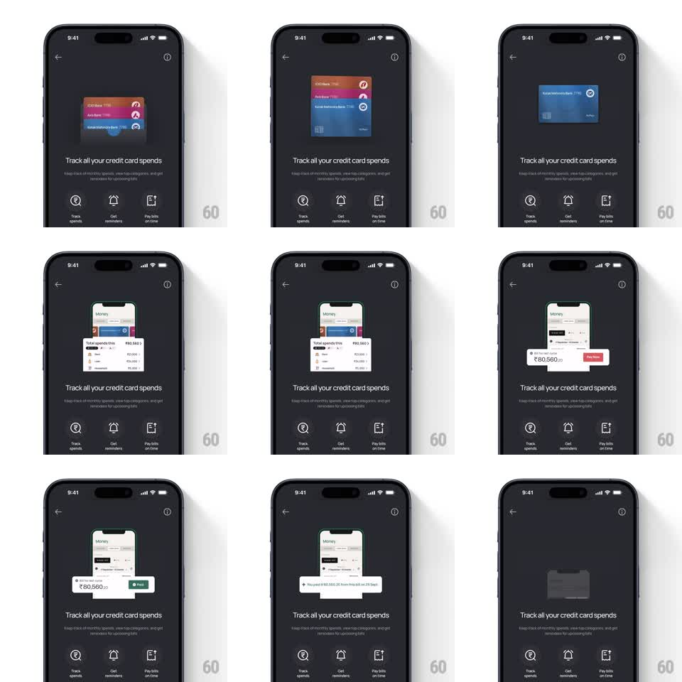

Media
Frame-by-frame

Rebuild this animation 1:1: Jupiter's credit-card tracking onboarding - a dark explainer screen where a looping mini demo animates above fixed copy: cards fan into a stack, a spend summary slides in, a bill gets paid, and a success receipt confirms it.

Rebuild this animation 1:1: Jupiter's credit-card tracking onboarding - a dark explainer screen where a looping mini demo animates above fixed copy: cards fan into a stack, a spend summary slides in, a bill gets paid, and a success receipt confirms it. ## Integration Integration: stack-agnostic spec - springs given as stiffness/damping, timed motions as duration + curve; map every value to your framework and animation library of choice. ## Scene Jupiter's dark onboarding screen: back chevron and info icon at top, the headline "Track all your credit card spends" with a sub-line, and three feature icons along the bottom (Track spends, Get reminders, Pay bills on time). The upper half hosts a looping miniature demo: real bank cards (ICICI, Axis, Kotak Mahindra) fan and stack, a mini "Money" app screen rises showing "Total spends this ₹80,560" with a per-card breakdown, a red bill banner "₹80,560.20 - Pay now" slides over it, and a success toast "You paid ₹80,560.20 from this bill on 25 Sept" lands before the loop resets. ## Motion spec Pattern: looping product demo sequence, ~8s per loop. - The three cards fan open from a stack (spring stiffness 280 damping 22), each rotating a few degrees apart, then gather back into a single deck. - The mini Money screen rises from the bottom of the demo area (450ms, ease-out), its spend rows staggering in (60ms apart). - The bill banner slides in from the right (300ms) carrying amount and Pay now button; a tap flash on the button leads to the banner filling green as "Paid". - The success toast pops in at the bottom of the demo (spring stiffness 380 damping 20), holds a beat, and the whole demo fades out to reset the loop. - Headline, sub-line, and feature icons stay static throughout. ## Calibration - The demo reads as a tiny real UI - card art, rupee amounts, and buttons are legible. - The loop resets cleanly: demo area empties before the cards return. ## Reduced motion Demo steps crossfade without motion. ## Don't miss - Cards are recognizable real-bank designs, not generic rectangles. - The three bottom icons anchor the screen's three promises and never animate.